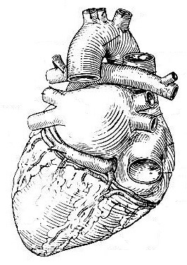
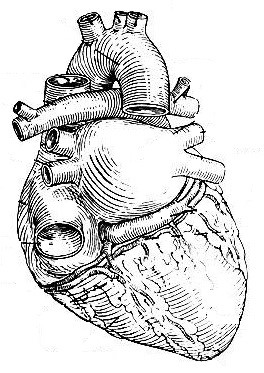

Describing the Experiences of Students with ADHD Learning Science Content with Emerging Technologies
Abstract
Emerging technologies, such as virtual reality, haptics, and 3-dimensionality, provide novel opportunities to allow students to investigate scientific phenomena by fostering perceptions of virtual presence, the feeling of being sensorially immersed and authentically interacting within a computer-generated virtual learning environment (VLE). Neurotypical learners are largely represented in VLE research on science learning, with fewer with neurodivergent learners, such as students with ADHD. This descriptive case study sought to address the dearth in the literature on neurodivergent students’ experiences, with emerging technologies, for learning science. Specifically, the case describes the extent to which neurodivergent learners experience the affordances of VLEs for science learning, as compared to their neurotypical peers, in: zooming, spatially orienting and rotating objects, viewing multiple representations and abstract processes in real-time, as well engaging in risk through multiple trials. Five middle grades students (diagnosed with ADHD) were assessed and observed using a tool (zSpace) that combines emerging technologies to learn cardiac anatomy and physiology. Students’ utterances of virtual presence and technological affordances were coded, and frequency counts and percentages were calculated, both individually and collectively. The results found that students most described sensory (41%), control (30%), and realism (26%) constructs with fewer reports of holding their attention (3%). Analyses of cardiac assessments found gains in scores for spatial rotation and viewing abstract processes, no change in score in viewing multiple representations, and a decrease in scores for spatial orientation. This case study provides unique insight into the needs of neurodivergent learners when using emerging technologies for science learning.
Keywords: 3-Dimensional; ADHD; Biology Education; Haptics; Instructional Technology; Students with Disabilities; Virtual Reality
*Corresponding Author, Rebecca Hite
(rebecca.hite@ttu.edu)
Submitted August 4, 2020
Accepted Octoboer 1,2021
Published online Tue Oct 26 2021
DOI: 10.14448/jsesd.13.0012
INTRODUCTION
In the United States, professional agencies and educational policies promote the use of technology to support K-12 learning. The National Education Association (NEA, 2019) suggested teachers incorporate compatible technologies within learning spaces; technologies that students can use easily both inside and outside of the classroom. In science education, the National Science Teaching Association (NSTA, 20-16) stated that teachers should integrate technologies as pedagogical tools to enrich students’ learning of science. Furthermore, as cited by the White House and the Committee on STEM Education’s five-year strategic plan for science, technology, engineering, and mathematics (STEM) education, there are two fundamental objectives to enhance the learning of science by integrating technologies into classrooms: 1) support scientific literacy of all Americans in providing access to quality education including the use of technologies and 2) empower innovation within the country’s workforce (National Science & Technology Council, 2018). The relevant and meaningful incorporation of technologies in science classrooms offers students the opportunity to engage in learning that will expand beyond the traditional classroom experience and into future workforce endeavors.
Several emerging technologies have evolved that can be used as instructional tools to support student learning in K-12 science education. Mobile technologies (Burden & Kearney, 2016), simulation and virtual laboratories (Potkonjak et al., 2016), augmented reality (AR) (Ibáñez & Delgado-Kloos, 2018), remote laboratories (Authors, 2014), haptics (Authors, 2006a), video gaming (Clark & Ernst, 2009), and virtual reality (VR) with 3-dimensional (3D) graphics (Authors, 2019b), represent some of the emerging technologies that enable students to interact with science concepts. As the utilization of these technologies increases, exploring their affordances to provide innovative learning experiences for all learners is critical. Specifically, researchers need to know more about how diverse learners use these tools in learning science (Oliveira et al., 2019). Specific affordances of emerging technologies to enhance science learning include providing robust visualizations of scientific phenomenon (Nielsen et al., 2016; Pot-konjak et al., 2016), conducting research with scientists remotely (Authors, 2017), enhancing development of spatial abilities (Cheng & Tsai, 2013), and promoting students’ interest and motivation in learning science (Parong & Mayer, 2018). Notably, the continuous development and refinement of emerging technologies pose some difficulties for educators, specifically in initial and on-going costs of technology purchase and maintenance as well teacher training for effective application in the classroom (Cardullo et al., 2014; Authors, 2019b).
Nevertheless, these emerging technologies, particularly 3D, haptic, virtual reality (VR) technologies, are becoming vital tools in enhancing science instruction. The efficacy of these tools lies in how virtual learning environments (VLEs) provide a virtual space for students that they can control and explore to investigate science phenomena that appears lifelike both in appearance and sensory engagement, providing to the user an immersive and interactive learning opportunity (Mikropoulos & Natsis, 2011; Authors, 2019b). The design of VLEs to promote interactive and immersive learning experiences include specific hardware such as 3D glasses, head-mounted gear with sensors that track the head movements of the learner and haptics (force feedback) to replicate the sense of touch with virtual objects (Wouters et al., 2013; Grasser et al., 2014). Qian (2019) suggested that VLEs that employ 3D graphics, haptics, and VR in science classrooms may promote motivation, inquiry, and develop skills that support the learning of science. Furthermore, research by Merchant et al. (2013) indicates that learners with low spatial ability can benefit from 3D-enhanced VLEs for learning abstract content in chemistry. Whereas haptic tools in VR systems with 3D graphics permit an exchange of sensory information between the learner and the VLE; this sense of touch can foster a greater perception of immersive learning (Authors, 20-06b). As a learning experience involving sensory input and output, 3D, haptic, VR technologies, both individually and together, generate an immersive and interactive VLE to support rich and robust science learning for K-12 students.
LITERATURE REVIEW
To date, the bulk of the existing studies on the affordances of emerging technologies focus on neurotypical learners. However, there is a growing sector of students who have been diagnosed with attention-deficit/hyperactivity disorder (ADHD), comprising 6.1 million school-aged students (CDC, 2019). Also referred to as ADD, ADHD is a neurobehavioral disorder typified by impairment in inhibitory control and response inhibition, resulting in executive functioning impairment (Barkley, 1997). The region of the brain where ADHD occurs is within the frontal lobes, an area that governs one’s ability to pay attention, use self-control, and regulate levels of activity (Biederman, 2005). Inattention, impulsivity, and hyperactivity, and sometimes anxiety and anger (CDC, 2019, 2020), form the basis of students’ challenges when learning in school and persist into their adult lives. Unsurprisingly, VR has been used as a means of assessment (Parsons et al., 2007), digital therapy (United States Food and Drug Administration, 2020), and rehabilitation (Bashiri et al., 2017) for children with ADHD. For example, a study by Yan et al. (2008) found VR to be effective for children with ADHD in reducing their impulsivity and improving attentiveness. Thus, the utility lies in “the ability of VR programs to increase engagement and motivation by integrating a child’s [with ADHD] preferred interests into the program” (Wang & Reid, 2011, p. 4). This notion is reinforced by concurrent research of students with ADHD playing video games, finding that children with ADHD (as compared to a control group of neurotypical children) did not present issues with inhibitory control as hypothesized (Bioulac et al., 2014). Further, 3D-enhanced VR may be a useful tool specifically for students with ADHD. A study by Othmer and Kaiser (2000) found that when using 3D technologies, students with ADHD not only outperformed students with ADHD 2D groups on a learning task, but also had greater improvements in impulse control on a measure of attention. Notably, there are ongoing concerns that VR use may contribute to a specific type of motion-based discomfort (VR sickness) or cause individuals to become fearful in hyper-realistic and immersive VR environments (VR phobia), both of which vary greatly among users by gender, age, health-status, their duration of VR use, as well as issues like lagging, flicker, distortions, and tracking errors in either hardware or software (Somrak et al., 2019).
Therefore, there is little suggestion that VR would cause such ailments among persons with ADHD specifically; the literature instead suggests that VR environments are greatly beneficial for individuals with ADHD for behavioral and cognitive therapies (Cieślik et al., 2020; Linder, 2020; Park et al., 2019). Thus, these findings have led the authors to conclude that technology with 3D elements helps students with ADHD better achieve their learning outcomes. We decided to focus on middle grade students with disabilities since many of their school experiences stress basic skill acquisition rather than enriching experiences with conceptually demanding material (Gersten et al., 2006). Their disparate school experiences may help to explain why there is a significant disparity between students with disabilities and their peers without disabilities in mathematics and science proficiency (Hwang & Taylor, 2016; Nations Report Card, 2015; Moon et al., 2012). Therefore, a platform that marries a variety of emerging technologies, may provide novel experiences to and hold unique affordances for neurodivergent learners.
Research from neuroscience provides some insight to why coupled emergent technologies (3D, haptics, and VR) help adolescents and individuals with cognitive impairments learn; specifically, how they experience virtual presence in VLEs. Baumgartner et al. (2006) hypothesized that the prefrontal cortex, the area involved with executive function in the brain, processes users’ experiences in VLEs. Considering the VLE experiences of children, with an “incomplete functioning of the prefrontal cortex, we suggest that the spatial presence experience is enhanced in young children compared to adolescents, because children are less capable of cognitively controlling and monitoring the virtual experience” (p. 31). Their follow up study found that children did experience more robust perceptions of presence, as compared to adults, due to the lack of full function in this region of the brain (Baumgartner et al., 2008). In science education research, Authors (2019c) found relationships between children’s perceptions of presence and their measures of Piagetian-based cognitive development, affirming their work.
THEORETICAL AND CONCEPTUAL FRAMEWORK
For this study, virtual presence theory was used to explore neurodivergent students’ experiences while learning science content (cardiac anatomy and physiology) with an instructional tool that incorporates three emerging technologies (3D, haptic, VR) in a single platform. A meta-analysis of previous research suggests that emerging technologies promote science understanding and learning (Oliveira et al., 2019), yet the degree to which these emergent technologies support learning experiences for students with ADHD is still being established (Botsas & Grouios, 2017; Mangina et al., 2018). Virtual presence, as a lens, describes how real a virtual reality learning environment is perceived by learners (Lombard & Ditton, 1997; Witmer & Singer, 1998). According to Witmer and Singer (1998), perceptions of immersion and interaction between the learner and the virtual environment generate this sense of presence. Inducing virtual presence while using emerging technologies, like 3D haptic-enabled VR, promotes user interactivity, engagement, and learning (Makransky & Petersen, 2019; Schifter et al., 2012).
Within a virtual environment context, four factors govern inducement of virtual presence: 1) sensory engagement, 2) apparent realism, 3) control over the VLE, and 4) a lack of external distractions (Witmer & Singer, 1998; Lombard & Ditton, 1997). Control as a factor for virtual presence describes the ability to which a learner can navigate and access the VLE with ease and efficiency. Distractions perceived by the learners (i.e., lagging of the software application, interruptions from peer learners) may inhibit virtual presence. Realism, as a factor of virtual presence, is a perception of how immersed the learner feels or how vividly the learner connects to the VLE (Witmer & Singer, 1998). Sensory factors are related to information processed by the learner, such as auditory, visual, and tactile sensory cues that heighten user immersion in the VLE. As an integrated whole, virtual presence replicates reality such that the user perceives the VLE an authentic proxy for the real world (Rubo & Gamer, 2018).
To conceptualize virtual presence as a framework to explore how students with ADHD interact within and perceive VLEs that leverage 3D VR with haptics as an appropriate VLE for science, a conceptual framework was designed to describe the connective factors of technological affordances with virtual presence that may facilitate learning experiences of students with ADHD. Leveraging research by Makransky and Petersen (2019) on modeling learning in VR in parentheses and depicted in Figure 1, virtual presence comprising of immersion (sensory and realism factors) and interaction (control and distraction factors) relate to VR features (e.g., hardware and software affordances of a 3D, haptic, VR system) employed in the research study. Usability is related to VR features, which is important to note in the model as it relates to students’ capabilities to effectively use the hardware and software to learn (science) content. Modeling immersion and interaction constructs (disaggregated by the 4 factors) of virtual presence shows how a 3D, haptic, VR learning environment supports student learning: immersion occurring through the architecture of hardware and software affordances may support learner through five known affordances (spatial orientation and rotation, zooming in and out of objects, access to multiple representation and viewing abstract processes in real time). Per Makransky and Petersen (2019), these VR features foster both virtual presence and notable experiences, such as opportunities to engage in trial and error and the ability to safely engage in risk. Given the literature on ADHD, we propose an adaption of Makransky and Petersen’s design to explain how students with ADHD may differentially learn with emerging technologies. In our model, we parse Makransky and Petersen’s immediacy of control into separate factors of the interaction construct of virtual presence: control and distraction. We believe distraction may serve as a mediating variable in their learning. Indicators of distraction can include, but are not limited to four central symptoms of zoning out, hyperactivity, impulsivity, and anxiety (CDC, 2020). In this study, distraction was parsed between observations and dialogue (between researchers and students) of being distracted as well as having their attention held by the VLE. All the proposed connections, factors, and skills in the conceptual framework may provide a lens to describe perceived virtual presence, affordances of virtual reality, and learning of science for students with ADHD in a VLE.

From virtual presence theory, we can describe how students with ADHD interact with and learn from VLEs that leverage 3D-enhanced VR with haptics for learning science specifically, in using five established technological affordances of emerging technologies from scholarship in the field (Dalgarno & Lee, 2010; Makransky & Petersen, 2019; Merchant et al., 2014). Collectively identified as affordances of 3D, haptic, VR, they are: 1) zooming in and out from objects; 2) spatial rotation; 3) spatial orientation; 4) viewing abstract processes in real time; and 5) viewing multiple representations of phenomena. If these affordances are observed and reported by students, they should too be evidenced on assessments of learning science (cardiac anatomy and physiology), forming the five indicators of interest in this research study.
METHODOLOGY
A one-group pretest-posttest research design, per Campbell and Stanley (1963) was selected to determine the effects of a novel treatment (emergent technologies) on a novel population (students with ADHD) of science learners. This design permits qualitative observations and quantitative measurements of a treatment on a group of individuals. The variance observed or measured can then be attributed to the intervention they had experienced of using zSpace to learn science. Since these students did not have access to the emerging technology (zSpace) outside of the researchers’ laboratory, this design is acceptable. Studies following individual students with limited technologies such as virtual reality makes large-scale, controlled studies unrealistic. Furthermore, there are limited numbers of students with identified ADHD conditions within each grade level attending the school that was the focus for this investigation. As a consequence, a case study approach was employed to explore how neurodivergent students experience emerging technologies for science lear-ning by integrating both qualitative and quantitative data (Yin, 2003, 2018). Specifically, a descriptive case study permitted application of theory (presence) and prior literature (of the empirically based affordances of technologies as well as the use of technologies as instructional tools) to explore experiences among students identified with ADHD. According to Yin (2018), a case study is an ideal approach given the focus is on individuals’ experiences within a bounded intervention (i.e., using emerging technologies for science learning). The intent of this study is aligned to a case study approach which values replication (experiences) over sampling logic. The replication in this study was common experiences in using zSpace for science learning (i.e., the intervention) in which individuals related their experiences therein to be described individually and collectively (e.g., similar and different experiences reported in a pattern-based case analysis). Further, being an embedded design, “each individual…may in fact include the collection and analysis of quantitative data, including the use of surveys within each case study” (Yin, 2018, p. 61). This aligns with the notion of a pretest-posttest research design, which can include content assessments as a form of quantitative data collected to measure the variance in participants’ knowledge before and after treatment. This study is part of a series of studies that examine how middle school students learn science content with emerging technologies (Authors, 2016). The sampling for this study was convenience sampling, as participants for this study had to meet the narrow selection parameters of reporting a documented diagnosis of ADHD.
Research Questions
The following research questions guided the research study of middle grade aged students with ADHD who used 3D, haptic-enabled VR for science learning.
-
1.
What are the reported elements of virtual presence in relation to: interaction (user control, minimal external and internal distractions) and immersion (sensory engagement, apparent realism)?
-
2.
What were the affordances students reported for:
-
a.
using the technology (i.e., zooming, spatial rotation, spatial orientation, viewing abstract processes in real time, multiple representation)?
-
b.
their learning experiences (i.e., safety and risk, trial and error)?
-
a.
-
3.
What gains did students have in their knowledge of human heart using pre-post open- and closed-ended content assessments?
Students
The five participants were seventh-grade students, between the ages of 12 and 13, from a single leadership-magnet middle school in the southeastern United States. To garner an understanding of the students’ socioeconomic backgrounds, this school location serves approximately 475 students, one-third African American, Hispanic, and White, half of which are categorized as economically disadvantaged. To describe the geographic context of where the students live, this school is located in the state capitol city and is in close proximity to a tier 1 research university. This school is lower performing (by averages) in the areas of mathematics, science, and reading compared to other schools in the district and in the state. This school was selected because of their receptivity to the specificity (i.e., students with ADHD) of this research study and using emergent technology in science instruction. All seventh-grade students were invited to the study through their science classes, in which researchers stipulated we were seeking students who had been identified as ADHD. The three boys and two girls who responded to our call for participation were each included in the research study. Each participant identified as non-Hispanic white and had a documented diagnosis of ADHD that was affirmed by their parents and students in the consent and assent processes, respectively. Ps-eudonyms were assigned to the three boys (Wesley, Liam, and Parker) and two girls (Alice and Gabby). Although this group of students does not reflect the full racial and ethnic diversity of students at the school, white students diagnosed with ADHD do represent a sizeable population of all students with ADHD preceded only by non-Hispanic black students (Zablotsky & Alford, 2020). No other disabilities and/or disorders were neither asked nor disclosed, since ADHD was the focus of the research inquiry with minors, although we recognize that up to 50 percent of individuals with ADHD diagnoses also have comorbid conditions such as learning and language disabilities, fine and gross motor difficulties, anxiety, depression, and other psychological or neurological disorders (Silver, 2006). However, these students do typify neurodiverse students experiences in learning science in the naturalistic school settings.
Technology
The zSpace 200 series system (2015) consists of a 1920*1080 HD display with four head-tracking cameras, a three-button haptic-enabled stylus, and polarized eyewear with five reflectors that act as sensors for the tracking cameras. Figure 2 shows the hardware components of the zSpace system (computer laptop that runs software into the display is not shown). The zSpace system creates the illusion of 3D VR objects using a stereoscopic technique that replicates dual images to the user. These images appear to have depth (stereopsis) such to enhance immersion. The eyewear allows the user to access these stereoscopic images from different perspectives when moving their head and the haptic-stylus allows the user to manipulate VR objects in real time, enhancing interaction. These simplistic features (simple eyewear and pen-like stylus) lend toward high usability, which is linked to robust learning in VLEs (Makransky & Petersen, 2019). This technology was chosen because it possesses both immersive and interactive elements to facilitate virtual presence (Authors, 2020) among individuals with cognitive disabilities (Authors, 20-19a), and for science learning (Authors, 2019b).

Instruction
Each student completed three sixty-minute sessions (180 minutes total) using the zSpace system, guided by a researcher. A second researcher videotaped the students’ interactions and conversation with the primary researcher while recording field notes. In session one, students were first introduced to the hardware by holding the stylus, hearing sounds from the system, and wearing the eyewear. Then, students were given instructions and time to utilize the software tools of zooming and rotating objects, as well as manipulate a built-in perspective tool that permitted the user to look inside objects. Students explored a virtual environment in which they could pick up and examine objects and created series or parallel circuits on a virtual circuit board. Participants had learned about circuits in their formal class during the school year, so this was science content familiar to them. In session two, students explored and dissected pre-selected objects: a human tooth, a starfish, and a dolphin. These objects were related to biology content that was deemed as less familiar to what students may have seen in their formal science education. At the mid-point of session two, students were asked to select objects that they wished to dissect. Wesley (pseudonyms are used throughout the paper) selected a dinosaur and the dwarf planet of Pluto, Alice selected an owl pellet and a house cat (because she had a pet cat), and Liam selected the planet Earth, a fly, and a Tyrannosaurs Rex. Gabby and Parker chose to not select any additional objects to dissect. Session 2 concluded with students using a different software program that explored the concepts of friction. Students made, tested, and reflected upon predictions of how a virtual ball would behave when rolled over three different surfaces (i.e., wood, ice, and rubber). In their last session (three), students explored the chambers and valves of the heart, describing what they were observing on cardiac form and function. Prior to the session three, each student verified that they had not learned about the human heart previously in school and that they were not familiar with the heart anatomy or physiology. In this last session, students observed and described how they understood blood moved to, through, and from the heart by watching, dissecting, manipulating, and feeling (haptics) the heartbeat in real-time. Figure 3 shows how the heart appears in zSpace to the user. This schema of using pre and post diagnostics, with time for qualification (multiple sessions) is recommended by researchers in evaluating knowledge acquisition in 3D VLEs (see dos Santos Nunes, Roque, & dos Santos Nunes, 2016).

Data Collection
Prior to the third and final session, students first completed a close-ended content assessment on paper to determine their knowledge of the human heart (see Appendix A). Next, students were asked to take an open-ended assessment, tracing cardiac circulation (blood movement inside the heart) using a dry erase marker on a white board, labeling the directionality of blood from the ascending aorta and pulmonary veins (see Appendix B). This type of assessment provides a more complete understanding of the nature of students’ learning (Fančovičová & Prokop, 2019). After the ninety-minute session exploring the heart, students completed the post-assessments. Approximately seven days elapsed between administration of the pre-and post-assessments. One additional week later, students participated in a 45 minute follow up interview, which was audio recorded, and took the post-assessments. Students were interviewed about their experiences learning science using zSpace, their ease and difficulties in using the system, their preferences for this type of technology in their overall formal science learning, and perceptions of presence based associations (realism, sensory engagement, control, and distraction) when using the zSpace system.
Data Analysis
Field notes with audio (interview) and video (session) data were combined and compared to develop transcripts for analysis. Transcripts were reviewed and double coded by two experienced researchers (and a third coder for intercoding), per the coding schema in Figure 4, from individuals’ reports and researchers’ observations of research-based affordances of 3D, haptic, VR for neurotypical students and the constructs of virtual presence that may differentially be impacted among students with ADHD. To explore neurodivergence, the distraction factor was further disaggregated into codes that reflect typical symptoms of ADHD (CDC 2019, 2020) that students may experience when using zSpace. This coding provided observations to characteristics of ADHD symptoms each student displayed during zSpace sessions. Frequency counts were developed by student and by data type to indicate the presence of theoretical constructs among students’ experiences with the technology. Descriptive analyses of cumulative frequencies were made to examine the distribution of reported affordances and perceptions of presence by each student. Chi-square analyses of independence and Fisher’s exact tests were made to determine any significant associations among constructs.
| Affordance Codes (Units of Observation) | |||||||||
|
|
|
Multiple Representation (Learning or seeing in multiple ways (sight and sound for example), reporting they can see and do, etc.) | ||||||
|
|
|
|||||||
| Constructs and Descriptions of Virtual Presence (Units of Observation) | |||||||||
| Involvement | Immersion | ||||||||
|
|
||||||||
|
|
||||||||
| *Subset of Distraction Construct: Students’ Reporting of ADHD-like Symptoms | |||||||||
| Zoning out | Hyperactivity | Impulsivity | Anxiety | ||||||
| Feeling ‘spacey’ or ‘inside their own head’ | Feeling disorganized | Exhibiting difficulty keeping materials in order | Feelings of anger or frustration | ||||||
| Inattention to the virtual world | Working very quickly | Excessive talking | Making lots of mistakes | ||||||
| Trouble remembering instructions or directions | Trouble stopping one activity to start another | Trouble staying relatively still (fidgeting) | Trouble getting started on tasks in zSpace | ||||||
| Talking a lot of time to complete task(s). | Began the activity (grabbing objects) before permission or directions for the activity | Having difficulty following directions or prioritizing actions | Distracted by the outside world (outside of zSpace and the researcher) | ||||||
Pre and post closed- and open-ended content assessments were scored using an answer key (in Appendix A) and rubric (in Appendix B). A sign test determined gain and loss scores out of 13 and 16 points, respectively. Combined (closed- and open-ended) assessment items were categorized by their associated affordances to further evaluate student performance between assessment administrations (see Appendix C). In the closed-ended assessment, item numbers 4, 5, 6, and 7 related to rotation, item numbers 2 and 12 measured elements of spatial orientation, item numbers 3, 8, 11, and 13 connected to viewing abstract processes in real time, and item numbers 1, 9, and 10 focused on multiple representation. In the open-ended assessment, categories C and D (cardiac anatomy) were related to rotation, categories A and B (directionality of blood flow out of the heart) to spatial orientation, categories F, G, and H (cardiac circulation) related to viewing abstract processes in real time, and category E (cardiac physiology) related to multiple representation. Changes in size (zooming) was discussed in observations and interviews, although not reflected or coded in the assessments.
Trustworthiness
To ensure dependability of the data analysis procedures, each transcript was co-coded by two researchers, while a third coder rated 30% of the data. All coders were advanced doctoral students in science education and a part of a research group that measured and assessed of secondary science students’ perceptions of virtual presence. Video and audio data allowed researchers to accurately capture participants’ utterances and these data were triangulated with the instructional activities (confirmability) prior to coding of transcripts. The wide variety of data sources supports a more accurate depiction of students with ADHD experiences’ learning science with 3D, haptic, VR technologies. The third coder had no disagreements with coded data reviewed at the construct level (i.e., of control, realistic features, sensory engagement, attentiveness or a lack of distraction) as seen in Figure 4.
Limitations
There are several threats to internal validity that must be addressed when using a case study pretest-posttest design (Campbell & Stanley, 1963; Knapp, 2016; Wuensch, 2019). This study helped to mitigate threats due to history by employing an emerging technology (zSpace) that is neither used in science instruction nor their homes, such they did not receive any additional treatment. Since the duration between testing and treatment was only a few weeks, maturation is unlikely. Because the testing was based in cognition, students may have been primed about aspects of the heart they may have recognized in treatment, from the test. Because the test was on paper and white boards (2D), whereas instruction was in 3D, there is little suggestion that items from the pre-testing would appear as in during treatment, contributing to testing effects. Consistent application of treatment and assessments (using a prescribed curriculum and tests) helps to mitigate instrumentation error. Furthermore, use of two dissimilar (one open-ended and a closed-ended) assessments helps to better visualize gains to discourage variance in pre- and post-administration scores due to regression towards the mean. Two assessments or a double pre-test also provides additional support to the effects of treatment (Knapp, 2016). Limitations of case study research is arguably in generalizability; however, use of theory (as was in this study) can help to extend research findings and conclusions rather than use of large sample sizes (Yin, 1994). Furthermore, the goal of this study was to gain insight into how students with ADHD learn science with this technology and the results should not be inferred to students who were not participants in the study.
We did not measure students’ perceptions of presence in real-time, rather asking that retroactively. Distraction decreased over each session (from free-choice learning to science instruction), suggesting that novelty effect contributed less to the variance in observed and reported perceptions of presence. Additionally, we did not collect information on whether students were prescribed medication to mitigate their symptoms of ADHD (and if prescribed whether they had taken their ADHD medication prior to each session), or whether they were participating in behavioral therapies to manage their ADHD. Asking for more or all privileged health information was not within the purview of this study and could have possibly dissuaded parents of students with ADHD to volunteer to the study. Further, these students with ADHD and/or with other comorbid conditions represent the naturalistic education setting of neurodiverse learners. This may help to explain dramatic individual’s differences, among reports and observations, in using zSpace to learn science. For example, Gabby had dramatically different experiences in her treatment compared to the other students. She found difficulty in using the stylus as reported from her interview (described in the results section), suggesting fine motor impairment, which is a comorbidity of ADHD diagnoses (see Silver, 2006). Also, Gabby scored lower on the posttest than the prettest on the closed-ended assessment, although showing modest gains on the open-ended assessment (see Table 7). This change in testing condition, in which the test for the open-ended items was read-aloud to her, may have provided her a vital accommodation to evidence her knowledge better (rather than by reading by the closed-ended selected response items) due to some other learning disability she may have possessed (Meloy et al., 2000).
RESULTS
As an embedded study, student-level results are presented first in Tables 1-5, followed by aggregate results (or the pattern case analysis) in Tables 6-8. Individually and collectively, results are parsed by students’ perceptions of virtual presence and reported technological affordances and experiences in tables of each numbered session, final interview (I), and totals (sum) with supporting utterances (quotations) in the narrative. For this analysis, attention and distraction are parsed from the same construct, which are denoted by positive (attention) and negative (distraction) elements that contribute to virtual presence.
Table 1 displays Wesley’s experiences, suggesting the most pronounced elements of virtual presence were in sensory engagement (n = 16) and control (n = 10), with no feedback related to attention or distraction. Wesley described in his interview how the haptic feedback enhanced his learning of the heart “because you can actually feel it beating on zSpace, but you can’t feel this on a model.” Being able to orient objects in space was the most consistently described and observed affordance across sessions (n = 8), whereas viewing abstract processes in real-time (n = 8) was most salient in his learning of the human heart.
| Table 1. Frequency Count Summary of Observations on and Reports by Wesley | ||||||
| Theory | Constructs | Session 1 | Session 2 | Session 3 | I | Sum |
| Virtual Presence | ||||||
| Interaction | Control | 1 | 0 | 3 | 6 | 10 |
| Attention | 0 | 0 | 0 | 0 | 0 | |
| Distraction | 0 | 0 | 0 | 0 | 0 | |
| Immersion | Sensory | 3 | 2 | 3 | 8 | 16 |
| Realism | 4 | 1 | 0 | 1 | 6 | |
| Affordances | ||||||
| Technology | Zooming | 2 | 1 | 1 | 2 | 6 |
| Spatial Rotation | 0 | 1 | 1 | 2 | 4 | |
| Spatial Orientation | 2 | 2 | 2 | 2 | 8 | |
| Abstract Processes in Real Time | 0 | 2 | 6 | 0 | 8 | |
| Multiple Representations | 0 | 1 | 1 | 2 | 4 | |
| Experience | Safety or Risk | 0 | 0 | 0 | 3 | 3 |
| Trial and Error | 0 | 0 | 0 | 0 | 0 | |
Wesley elaborated later in his interview about seeing objects from different angles as important to his science learning:
[The zSpace session] is more visual and you move it [the heart] around in different ways [that] you can’t move a book around. Like, if you are looking at an animal and it looks like in a book, it only gives you one side of it, but in zSpace you can turn it around and then take it apart and stuff.
Table 2 shows Alice’s experiences, suggesting the most pronounced elements of virtual presence for her also in sensory engagement (n = 14) and control (n = 10), with two mentions of keeping her attention. In her interview, Alice mentioned that “It does not seem like you are on it [zSpace] very long, but you are on it for 40 minutes; it [zSpace] keeps your attention.” Being able to orient objects in space was similarly the most consistently described and observed affordance across sessions (n = 10), whereas viewing abstract processes in real-time (n = 11) was most mentioned, especially in the session where she learned about the human heart.
| Table 2. Frequency Count Summary of Observations on and Reports by Alice | ||||||
| Theory | Constructs | Session 1 | Session 2 | Session 3 | I | Sum |
| Virtual Presence | ||||||
| Interaction | Control | 2 | 0 | 1 | 7 | 10 |
| Attention | 0 | 1 | 0 | 1 | 2 | |
| Distraction | 0 | 1 | 0 | 1 | 2 | |
| Immersion | Sensory | 7 | 1 | 2 | 4 | 14 |
| Realism | 3 | 0 | 0 | 5 | 8 | |
| Affordances | ||||||
| Technology | Zooming | 2 | 0 | 2 | 5 | 9 |
| Spatial Rotation | 1 | 3 | 0 | 3 | 7 | |
| Spatial Orientation | 3 | 2 | 2 | 3 | 10 | |
| Abstract Processes in Real Time | 0 | 2 | 4 | 5 | 11 | |
| Multiple Representations | 0 | 0 | 3 | 5 | 8 | |
| Experience | Safety or Risk | 0 | 0 | 0 | 4 | 4 |
| Trial and Error | 0 | 0 | 1 | 4 | 5 | |
Alice stated later in her interview that she appreciated that:
the model was moving. You can enlarge it and you can’t really break stuff. It is moving. Some of models you just look at it and can’t take it apart. With zSpace you can take it apart and if you forget where it goes you can press a button and it will make it go back into place. You can make stuff invisible. You won’t lose parts of the model. You can easily fix that.
Her response also suggests she liked the ability to not break or to be able to easily fix things in the virtual environment, which is dissimilar to her real-world experience, suggesting the ability to safely engage in tasks where she perceived risk was important to her exploring the phenomenon of the human heart.
Table 3 shows Gabby’s experiences, suggesting the most pronounced elements of virtual presence for her also in sensory engagement (n = 7) and realism (n = 6), with four instances of observed distraction. In her first session, Gabby was very distracted, she struggled with using the stylus buttons and maintaining the cursor orientation on the screen, often needing prompting to the activity of the curriculum, acting impulsively in both the VR and real-world environments. Distraction was not observed in the latter sessions, however, in those sessions the curriculum was more tightly related to science content, rather than free-choice exploration of the virtual environment (in session 1).
| Table 3. Frequency Count Summary of Observations on and Reports by Gabby | ||||||
| Theory | Constructs | Session 1 | Session 2 | Session 3 | I | Sum |
| Virtual Presence | ||||||
| Interaction | Control | 0 | 0 | 0 | 4 | 4 |
| Attention | 0 | 0 | 0 | 0 | 0 | |
| Distraction | 4 | 0 | 0 | 0 | 4 | |
| Immersion | Sensory | 2 | 0 | 5 | 0 | 7 |
| Realism | 1 | 2 | 0 | 3 | 6 | |
| Affordances | ||||||
| Technology | Zooming | 0 | 1 | 0 | 1 | 2 |
| Spatial Rotation | 3 | 2 | 2 | 2 | 9 | |
| Spatial Orientation | 1 | 2 | 2 | 0 | 5 | |
| Abstract Processes in Real Time | 0 | 0 | 2 | 2 | 4 | |
| Multiple Representations | 0 | 0 | 4 | 0 | 4 | |
| Experience | Safety or Risk | 0 | 0 | 0 | 1 | 1 |
| Trial and Error | 0 | 0 | 2 | 2 | 4 | |
Gabby described in her interview that although the first session was complicated for her, it was useful and hardware use became easier for her to remember and use. For Gabby, rotation was the most consistently described and observed affordance across sessions (n = 9), whereas the ability to spatially rotate objects (n = 9) was the most noted affordance across her science sessions. During Gabby’s session on the heart, she was observed tapping on her own chest, comparing that haptic feedback to what it would feel in her own body, suggesting a strong connection between sensory engagement and realism as she learned about the human heart.
Table 4 shows Liam’s experiences, suggesting the most pronounced elements of virtual presence for him also in sensory engagement (n = 5) and control (n = 4), with one mention of how he remained attentive to his learning.
| Table 4. Frequency Count Summary of Observations on and Reports by Liam | ||||||
| Theory | Constructs | Session 1 | Session 2 | Session 3 | I | Sum |
| Virtual Presence | ||||||
| Interaction | Control | 0 | 1 | 1 | 2 | 4 |
| Attention | 0 | 0 | 0 | 1 | 1 | |
| Distraction | 0 | 0 | 1 | 0 | 1 | |
| Immersion | Sensory | 4 | 0 | 1 | 0 | 5 |
| Realism | 1 | 0 | 0 | 2 | 3 | |
| Affordances | ||||||
| Technology | Zooming | 0 | 0 | 0 | 0 | 0 |
| Spatial Rotation | 1 | 1 | 4 | 0 | 6 | |
| Spatial Orientation | 3 | 1 | 0 | 3 | 7 | |
| Abstract Processes in Real Time | 0 | 0 | 5 | 2 | 7 | |
| Multiple Representations | 0 | 0 | 1 | 0 | 1 | |
| Experience | Safety or Risk | 0 | 0 | 0 | 2 | 2 |
| Trial and Error | 0 | 0 | 1 | 3 | 4 | |
In his interview, Liam stated when he is taking “a test, you think you don’t want to do it because you’re reading all the time, but it’s [zSpace] kinda interesting and you are more motivated, kinda like a game.” Both spatial orientation (n = 7) and rotation (n = 6) were consistently described and observed affordances across sessions. Viewing abstract processes in real-time (n = 7), like Wesley and Alice, was most salient in the sessions on learning the human heart. Liam noted in his interview that the “3D kinda makes you think. It is more interesting than the teacher talking and taking notes” and “the best part was the 3D.”
Table 5 shows Parker’s experiences, suggesting the two most pronounced elements of virtual presence for him were in realism and control (n = 7, respectively) with no descriptions related to attention or distraction. He noted in session 1 that he liked the experience because it was “hands on [by using] the camera and the other tools.” Spatial orientation was the most consistent affordance reported and observed across sessions (n = 7). No particular affordance emerged as most salient during his session learning about cardiac anatomy and physiology. Parker noted in his final interview that when working with the heart, he enjoyed the fact that he could “make it bigger, and work, and beat.”
| Table 5. Frequency Count Summary of Observations on and Reports by Parker | ||||||
| Theory | Constructs | Session 1 | Session 2 | Session 3 | I | Sum |
| Virtual Presence | ||||||
| Interaction | Control | 1 | 1 | 1 | 4 | 7 |
| Attention | 0 | 0 | 0 | 0 | 0 | |
| Distraction | 0 | 0 | 0 | 0 | 0 | |
| Immersion | Sensory | 2 | 0 | 3 | 0 | 5 |
| Realism | 2 | 1 | 3 | 1 | 7 | |
| Affordances | ||||||
| Technology | Zooming | 1 | 2 | 1 | 1 | 5 |
| Spatial Rotation | 1 | 0 | 0 | 2 | 3 | |
| Spatial Orientation | 1 | 1 | 2 | 3 | 7 | |
| Abstract Processes in Real Time | 0 | 0 | 1 | 2 | 3 | |
| Multiple Representations | 1 | 0 | 2 | 0 | 3 | |
| Experience | Safety or Risk | 0 | 0 | 0 | 4 | 4 |
| Trial and Error | 0 | 1 | 1 | 3 | 5 | |
Table 6 shows student level data in aggregate. Among the students, the most salient factors of presence-based experiences was in sensory engagement (n = 47), control (n = 35), realism (n = 30) and very distantly by distraction (n = -4) and attention (n = +3). In regard to affordances, students reported or were observed leveraging spatial orientation (n = 37), followed by viewing abstract concepts in real time (n = 33), rotation (n = 29) and zooming (n = 22) objects, and having the ability to see multiple representations (n = 20) of scientific phenomena. Chi-square analyses of independence evidenced no significant association between frequency counts of students reported experiences in virtual presence (X(4, N = 5) = 1.1163, p = 0.8917) or associated affordances of 3D VR technology (X(4, N = 5) = 4.969, p = 0.2905). Each chi-square analysis had one cell with an expected value less than five, which can affect the outcome and is noted as such. Fisher’s exact tests evidenced insignificant p-values of p = 0.8891 and p = 0.947, respectively.
| Table 6. Case Frequency Count Summary of Observations on and Reports on All Students | |||||||
| Theory | Constructs | Wesley | Alice | Gabby | Liam | Parker | Totals |
| Virtual Presence | |||||||
| Interaction | Control | 10 | 10 | 4 | 4 | 7 | 35 |
| Attention | 0 | 2 | 0 | 1 | 0 | 3 | |
| Distraction | 0 | 2 | 4 | 1 | 0 | 7 | |
| Immersion | Sensory | 16 | 14 | 7 | 5 | 5 | 47 |
| Realism | 6 | 8 | 6 | 3 | 7 | 30 | |
| Affordances | |||||||
| Technology | Zooming | 6 | 9 | 2 | 0 | 5 | 22 |
| Spatial Rotation | 4 | 7 | 9 | 6 | 3 | 29 | |
| Spatial Orientation | 8 | 10 | 5 | 7 | 7 | 37 | |
| Abstract Processes in Real Time | 8 | 11 | 4 | 7 | 3 | 33 | |
| Multiple Representations | 4 | 8 | 4 | 1 | 3 | 20 | |
| Experience | Safety or Risk | 3 | 4 | 1 | 2 | 4 | 14 |
| Trial and Error | 0 | 5 | 4 | 4 | 5 | 18 | |
Regarding science learning, students reported varied experiences that illustrate the diversity of findings reported in Table 6. For example, when dissecting a tooth in Session two, Alice remarked that,
I have seen teeth, but not like this before. I didn’t know they were so yellow [in reference to the dentin] on the inside. I knew there were blood vessels, that’s why [when] we pull teeth, they bleed. The nerves and vessels are connected, never seen that before! I didn’t know inside of teeth had different colors. I don’t think much about what’s in the tooth or what it is like in there.
The technology provided new insight that she was able to anchor onto her prior knowledge (blood vessels) and practical experiences (bleeding when having a tooth pulled). It also generated a sense of wonder for something she may have relegated as simple and unremarkable.
Parker, in session 2 had similar thinking when dissecting the starfish that, “I thought at first [starfish are] not too complex, I like that you can take areas out into smaller areas to see small detail. There are tons of parts inside and I am surprised it is [mostly] stomach.” The detail and depth of his starfish observations may have enhanced his thinking of and appreciation for starfish. Liam, in session 3 had similar thinking when stating that he had “thought the heart was more simple [sic]. There are tunnels [to explore so] you can do what you want. You can move it around more than a mouse.” For him, having the ability to manipulate the heart added to his experience of engaging with science. Gabby, in the first session (in which she struggled in learning how to use the technology) said,
I feel like these things are real and are coming out, I want to touch it… take it out of the screen and put it on the table…You can see things more clearly. You can make things the way you want to see them. You can’t move objects in a book around.
For her, having control aided in keeping her interest in the scientific phenomena she was exploring; the interaction she had within the VLE heightened her sense of realism. Whereas Wesley noted in his first session that,
Freaks me out because I don’t like bugs. Looks really realistic with the wings flapping. Unlike a normal butterfly you have more control over it and it is easier to study. Seems very realistic, [the] shine you see and high definition [detail in] the wings…really like you can feel it.
For Wesley, the realism allowed him to engage in an activity he said that he couldn’t do physically (holding the butterfly) or psychologically (fear of bugs) in the real world. Again, like the other students, he found complexity in the living world that he had previously considered to be simple; furthermore, his control of the VLE added to the realism of the experience. Anecdotally, Wesley had bumped into one of the researchers months after the completion of the study incidentally on campus and remarked how his fear of bugs had lessened, after exploring them on the zSpace.
The next series of results relate to students’ performance on the closed- and open-ended assessments on the anatomy and physiology of the human heart. Table 7 displays students’ gain and loss scores from pre- to post-administration. The amount of change was roughly equal (14 and 15 points gained) on closed-ended and open-ended assessments, respectively. Wesley and Gabby who did not show gains on the closed-ended assessment, did show moderate gains on the open-ended assessment. Alice, Parker and especially Liam showed strong gains on both assessment types.
| Table 7. Students’ Disaggregated Gain/Loss Scores on Assessments of the Human Heart by Types (Close-Ended and Open-Ended) | ||||||
| Test Scores (Close-Ended) | Performance Assessment (Open-Ended) | |||||
| Out of 13 Possible Points | Out of 16 Possible Points | |||||
| Pre | Post | Change | Pre | Post | Change | |
| Wesley | 3 | 3 | 0 | 1 | 4 | +3 |
| Alice | 4 | 11 | +7 | 6.5 | 8.5 | +2 |
| Gabby | 5 | 2 | -3 | 3.5 | 6 | +2.5 |
| Liam | 3 | 9 | +6 | 6.5 | 12 | +5.5 |
| Parker | 2 | 6 | +4 | 3 | 5 | +2 |
| Overall | 17 | 31 | +14 | 20.5 | 35.5 | +15 |
To further visualize students’ performance on the open-ended assessment, students were asked to label parts of the heart and indicate how blood flows through the heart. Figure 5 shows Liam’s performance from pre- to post-administration of the open-ended assessment. These drawings suggest how his thinking became much more nuanced in regard to movement of blood and from which locations the blood was sourced (unlabled on left and labeled on right). Although some of his misconceptions persisted (the inferior vena cava taking blood away from the heart, for example), he was able to maintain connection to prior knowledge (blood going to brain) and add additional knowledge to his schema (notably, that lungs attach to both sides of the heart instead of just one) of cardiac function.

To understand to what extent technological affordances may have influenced students’ learning and knowledge of the heart, Table 8 shows the relationship of gain and loss scores to these affordances. These are parsed by student, and also aggregated in total. Questions from the pre- and post-assessments that tasked students in visualizing and manipulating (spatially rotating) objects had the greatest gains in aggregate (n = 22), followed by viewing abstract processes in real time (n = 7), and multiple representation (n = 2). However, for questions that asked students to contextualize the heart among other objects (spatial orientation), a loss score of 2 was observed. Since zooming was not represented in the items, it has null scores. Appendix D contains a radar chart that graphically displays technological affordances related to students’ gain/loss scores.
DISCUSSION
| Table 8. Students’ Disaggregated Gain/Loss Scores on Combined (Closed- and Open-Ended Types (Assessments of the Human Heart by Technological Affordance) | |||||
| Zooming | Spatial Rotation | Spatial Orientation | Abstract Processes in Realtime | Multiple Representation | |
| Wesley | – | +1.5 | 0 | +2.5 | -1 |
| Alice | – | +7.5 | -1 | +1.5 | +1 |
| Gabby | – | +2 | -3 | +0.5 | 0 |
| Liam | – | +6.5 | +1 | +3 | +1 |
| Parker | – | +4.5 | +3 | -0.5 | +1 |
| Overall | – | +22 | -2 | +7 | +2 |
The present study explored aspects of virtual presence and research-based affordances of the emerging technologies of 3D, haptic, VR, found among neurotypical learners, as applied to neurodivergent students. Addressing the research purpose required the development of a conceptual framing (Figure 1) that took into consideration unique symptoms that make foster distraction among adolescents with ADHD. After having observed and captured the experiences of these five students with ADHD when using a 3D, haptic, VR system (zSpace) for science learning. Given the layers within this framing, we are presenting our recommendations through the lens of the unique affordances of the system as a combination of emerging technologies (i.e., 3D haptic VR) and how the students with ADHD interacted and described their experiences with the system.
From the data, we conclude that the convergence of emergent technologies in 3D, haptics and VR (via zSpace) enhanced sampled students’ perceptions of virtual presence in immersion (N = 77) and to a lesser extent interaction (N = 34), which was greatly moderated by distraction. In regard to their experiences, the most observed and reported affordances was in spatial orientation (n = 37), followed by viewing abstract concepts in real time (n = 33), spatial rotation (n = 29), zooming objects (n = 22) and seeing multiple representations (n = 20) of virtual objects.
These findings relate to early presence research by Strickland (1996), who found that VLEs maximize neurodivergent (autistic) students’ preferences for visual stimuli when learning, yet to receive their full benefits, they should they be fully able to control the VLE (and consequential stimuli) safely. Given that user reported affordances found in this study (Table 6) related to centrally to only three aspects of presence: sensory engagement, control, and realism provides insight to the challenges neurodivergent students experience with the distraction (and attention) factor within the interaction construct of virtual presence. This is affirmed by gain/loss scores from the pre- and post-assessments that measured sampled students’ science learning; the greatest learning gains were found in the questions that used spatial rotation (n = 22), viewing abstract concepts in real time (n = 7), and multiple representations (n = 2). Zooming was not included, and questions that required spatial orientation were losses (n = 2). Although their reported and observed experiences with control were modest, students largely benefitted from control aspects (i.e., rotation) when assessed on their acquired knowledge of the human heart.
These findings affirm meta-analysis results by Botsas and Grouios (2017) who concluded that computer-assisted instruction was an effective strategy for enhancing instruction and the academic performance of students with ADHD. With our finding that control aspects were particularly salient among learners in our sample, this suggests by having that control of the “computerized educational world [it] has made it easier to find [science] information…help[ing] students with disabilities circumvent certain problems and adapt things in a way that might make their learning easier” (Lewandowski, Wood, & Miller, 2016, p. 84). Therefore, our model (Figure 1) provides a refined model of how neurodivergent students may differentially experience emerging technologies in learning science content.
Notably, there were differences among students, such as the girls in the case (Alice and Gabby) had more attention and distraction values as compared to their male counterparts (Tables 2 and 3). This is similar to other studies that suggest girls have disparate experiences in VLEs due to their level of confidence and comfort (Ausburn et al., 2009), perceptions of presence (Felnhofer et al., 2012), and other gendered factors (Lombard & Ditton, 1997). Therefore, despite the selection factor of neurodivergence, other demographic attributes play a pivotal role in students’ experience and learning with emerging technologies. Another example is the role of prior knowledge; Liam and Alice had the greatest gains (Table 7), yet, also had the higher pre-assessment scores. Prior research suggests prior knowledge is positive predictor in pre and post assessments when learning in VLEs (dos Santos Nunes et al., 2016). Meaning, prior knowledge could lead to greater investment in the content (Ryu, Kim, Chaudhury, & Rao, 2005), and such investment has empirical linkages to improved perceptions of virtual presence (Schrader & Bastiaens, 2012). Although not all students had the same level of prior knowledge (from pre-test scores as seen in Table 7), yet had all some degree of knowledge gains. Thus, students’ experiences and learning align to the affordances ascribed to neurotypical students (seen in Figure 1), although experiencing concerns with external and internal (within the VLE) distractions. Further, this case suggests neurodivergent students mirror their neurotypical peers in utilizing emergent technologies for gaining science content knowledge (Authors, 2019b, under review).
IMPLICATIONS FOR RESEARCH AND PRACTICE
An examination of spatial ability, or the “capacity to understand and remember the spatial relations among objects” (John Hopkins University, n.d., para 1), can help to ground the disparate findings between spatial orientation and rotation (both of which comprise subskills within spatial ability). Spatial orientation, the positioning of objects within space relative to other objects, requires more working spatial me-mory, which is dependent on attentional control (Shelton et al., 2009). Furthermore, a dearth of attentional control is a hallmark symptom of ADHD (Astle & Scerif, 2009), which may provide insight to why students may have liked it, yet the affordances were not equally represented (or mirrored) in the assessments. This is important as prior research found that spatial orientation mediates learning outcomes in physical sciences (Merchant et al., 2012). Whereas spatial rotation, movement of an object within a fixed axis, occurs in areas of the brain outside of the frontal lobe (Zacks, 2008), which are less impacted by ADHD (Biederman, 2005). This suggests that students were able to cognitively engage in spatial rotation as compared to spatial orientation. Extant research suggests that cognitive ability may influence perceptions of virtual presence among neurotypical learners (Authors, 2019c); from the findings of this research in regard to spatial orientation, this influence is even greater among learners with ADHD. It should be noted that spatial ability is not a static trait and can be cultivated and developed throughout the life span (John Hopkins University, n.d.). This may help explain diverse findings that learners with lower spatial ability benefit more (than learners with high spatial ability) in VLEs (Lee & Wong, 2014) and other findings that state a “desktop VR-based learning environment that is able to provide such learning experience (e.g. presence)…is crucial to achieve good learning outcomes for learners with different spatial abilities,” (Lee, Wong, & Fung, 2010, p. 1437). Therefore, further research is warranted to assess augmentation of spatial abilities among students’ with ADHD when using 3D, haptic VR technologies for long-term science learning.
CONCLUSION
This paper provides insight into the experiences of neurodivergent learners using emerging technologies to learn science content. Affordances of 3D, haptics, and VR emerging technologies mirrored those experienced by their neurotypical peers, which suggests that these technologies suggests that these technologies may support the science learning for both neurotypical and neurodivergent students. However, our results illustrate students with ADHD have asymmetrical experiences in spatial orientation, which tracks with research findings related to ADHD, and should be taken into consideration when using these technologies with neurodivergent le-arners. Rizzo and Kim (2005) stated that the attributes of VR that provide therapeutic affordances for neurodivergent individuals, may also be applied to learning by: engaging students in contained, self-guided learning; providing opportunities to practice skills in a low-risk environment, and being responsive to their individual actions (in the VLE) and scaffold learning goals. This research affirms the authors’ statements, refining the affordances of integrated emerging technologies (i.e., 3D, haptic, VR) to illustrate students’ robust perceptions of realism and sensory engagement (immersion), though issues with control and distraction inhibit perceptions of interaction. These findings can aid technologists and practitioners alike to consider novel and innovative ways to enable more equitable avenues for user control in VLEs, such to help facilitate presence for neurodivergent individuals.
REFERENCES
Astle, D. E., & Scerif, G. (2009). Using developmental cognitive neuroscience to study behavioral and attentional control. Developmental Psychobiology: The Journal of the International Society for Developmental Psychobiology, 51(2), 107-118.
Ausburn, L. J., Martens, J., Washington, A., Steele, D., & Washburn, E. (2009). A cross-case analysis of gender issues in desktop virtual reality learning environments. Journal of STEM Teacher Education, 46(3), 51-89.
Authors (2006a).
Authors (2006b).
Authors (2014).
Authors (2016).
Authors (2017).
Authors (2019a).
Authors (2019b).
Authors (2019c).
Authors (2020).
Authors (under review).
Barkley, R. A. (1997). Behavioral inhibition, sustained attention, and executive functions: constructing a unifying theory of ADHD. Psychological bulletin, 121(1), 65-94.
Bashiri, A., Ghazisaeedi, M., & Shahmoradi, L. (2017). The opportunities of virtual reality in the rehabilitation of children with attention deficit hyperactivity disorder: a literature review. Korean journal of pediatrics, 60(11), 337-343.
Baumgartner, T., Speck, D., Wettstein, D., Masnari, O., Beeli, G., & Jäncke, L. (2008). Feeling present in arousing virtual reality worlds: prefrontal brain regions differentially orchestrate presence experience in adults and children. Frontiers in human neuroscience, 2, 1-12. https://doi.org/10.3389/neuro.09.008.2008
Baumgartner, T., Valko, L., Esslen, M., & Jancke, L. (2006). Neural correlate of spatial presence in an arousing and noninteractive virtual reality: An EEG and psychophysiology study. Cyberpsychology & Behavior, 9, 30–45.
Biederman, J. (2005). Attention-deficit/hyperactivity disorder: A selective overview. Biological Psychiatry, 57, 1215–1220.
Bioulac, S., Lallemand, S., Fabrigoule, C., Thoumy, A. L., Philip, P., & Bouvard, M. P. (2014). Video game performances are preserved in ADHD children compared with controls. Journal of attention disorders, 18(6), 542-550.
Botsas, G., & Grouios, G. (2017). Computer Assisted Instruction of Students with ADHD and Academic Performance: A Brief Review of Studies Conducted Between 1993 and 2016, and Comments. European Journal of Special Education Research, 2(6), 146-180.
Burden, K., & Kearney, M. (2016). Future scenarios for mobile science learning. Research in Science Education, 46, 287-308.
Campbell, D. T., & Stanley, J. (1963). Experimental and quasi-experimental designs for research. Chicago, IL: Rand-McNally.
Cardullo, V., Zygouris-Coe, V., & Wilson, N. (2014). The benefits and challenges of mobile and ubiquitous technology in education. In J. Keengwe (Ed.), Promoting Active Learning through the Integration of Mobile and Ubiquitous Technologies. Hershey, PA: IGI Global.
Centers for Disease Control and Prevention. (2019, October 15). Data and Statistics About ADHD. https://www.cdc.gov/ncbddd/adhd/data.html
Centers for Disease Control and Prevention. (2020, April 8). Symptoms and Diagnosis of ADHD. https://www.cdc.gov/ncbddd/adhd/diagnosis.html
Cheng, K., & Tsai, C. (2013). Affordances of augmented reality in science learning: suggestions for future research. Journal of Science Education and Technology, 22, 449-462.
Cieślik, B., Mazurek, J., Rutkowski, S., Kiper, P., Turolla, A., & Szczepańska-Gieracha, J. (2020). Virtual reality in psychiatric disorders: a systematic review of reviews. Complementary Therapies in Medicine, 102480.
Clark, A. & Ernst, J. (2009). Gaming Research for Technology Education. Journal of STEM Education, 10(1), 25-30.
Dalgarno, B., & Lee, M. J. (2010). What are the learning affordances of 3‐D virtual environments?. British Journal of Educational Technology, 41(1), 10-32.
dos Santos Nunes, E. P., Roque, L. G., & dos Santos Nunes, F. D. L. (2016). Measuring Knowledge Acquisition in 3D Virtual Learning Environments. IEEE Computer Graphics and Applications, 36(2), 58-67.
Fančovičová, J., & Prokop, P. (2019). Examining Secondary School Students’ Misconceptions About The Human Body: Correlations Between The Methods Of Drawing And Open-Ended Questions. Journal of Baltic Science Education, 18(4), 549-557.
Felnhofer, A., Kothgassner, O. D., Beutl, L., Hlavacs, H., and Kryspin-Exner, I. (2012). “Is virtual reality made for men only? Exploring gender differences in the sense of presence,” in Proceedings of the International Society on Presence Research, Philadelphia, PA, 103–112.
Fowler, C. (2015). Learning activities in 3‐D virtual worlds. Br J Educ Technol, 46, 412-422.
Gersten, R., Baker, S. K., Smith-Johnson, J., Dimino, J., & Peterson, A. (2006). Eyes on the prize: Teaching complex historical content to middle school students with learning disabilities. Exceptional children, 72(3), 264-280.
Graesser, A.C., D’Mello, S.K., & Strain, A. (2014). Emotions in advanced learning technologies. In R. Pekrun and L. Linnenbrink-Garcia (Eds). Handbook of emotions and education, New York: Taylor & Francis.
Hwang, J., & Taylor, J. C. (2016). Stemming on STEM: A STEM education framework for students with disabilities. Journal of Science Education for Students with Disabilities, 19(1), 39-49.
Ibáñez, M., & Delgado-Kloos, C. (2018). Augmented reality for STEM learning: A systematic review. Computers & Education, 123, 109-123.
John Hopkins University. (n.d.). What is Spatial Ability? https://cty.jhu.edu/talent/docs/SpatialMore.pdf
Knapp, T. R. (2016). Why is the one-group pretest–posttest design still used?. Clinical Nursing Research, 25(5), 467-472.
Lee, E. A. L., & Wong, K. W. (2014). Learning with desktop virtual reality: Low spatial ability learners are more positively affected. Computers & Education, 79, 49-58.
Lee, E. A. L., Wong, K. W., & Fung, C. C. (2010). How does desktop virtual reality enhance learning outcomes? A structural equation modeling approach. Computers & Education, 55(4), 1424-1442.
Lewandowski, L., Wood, W., & Miller, L.A. (2016). Technological applications for individuals with learning disabilities and ADHD. In J.K. Luiselli & A.J. Fischer (Eds.), Computer-assisted and web-based innovations in psychology, special education, and health (pp. 61-94). London, UK: Academic Press.
Lindner, P. (2020). Better, Virtually: The Past, Present, and Future of Virtual Reality Cognitive Behavior Therapy. International Journal of Cognitive Therapy, 1-24. https://doi.org/10.1007/s41811-020-00090-7
Lombard, M., & Ditton, T. (1997). At the heart of it all: The concept of presence. Journal of Computer-Mediated Communication, 3(2). doi:10.1111/j.1083-6101.1997. tb00072.x
Makransky, G., & Petersen, G. B. (2019). Investigating the process of learning with desktop virtual reality: A structural equation modeling approach. Computers & Education, 134, 15-30.
Mangina, E., Chiazzese, G., & Hasegawa, T. (2018, December). AHA: ADHD augmented (learning environment). In 2018 IEEE International Conference on teaching, assessment, and learning for engineering (TALE) (pp. 774-777). IEEE.
Meloy, L. L., Deville, C., & Frisbie, D. (2000). The Effect of a Reading Accommodation on Standardized Test Scores of Learning Disabled and Non Learning Disabled Students (ED441008). ERIC. https://eric.ed.gov/?id=ED441008
Merchant, Z, Goetz, E.T., Keeney-Kennicutt, W., Cifuentes, L, Kwok, O, & David, T.J. (2013). Exploring 3-D virtual reality technology for spatial ability and chemistry achievement. Journal of Computer Assisted Learning, 29, 579-590.
Merchant, Z., Goetz, E. T., Cifuentes, L., Keeney-Kennicutt, W., & Davis, T. J. (2014). Effectiveness of virtual reality-based instruction on students’ learning outcomes in K-12 and higher education: A meta-analysis. Computers & Education, 70, 29-40.
Merchant, Z., Goetz, E. T., Keeney-Kennicutt, W., Kwok, O. M., Cifuentes, L., & Davis, T. J. (2012). The learner characteristics, features of desktop 3D virtual reality environments, and college chemistry instruction: A structural equation modeling analysis. Computers & Education, 59(2), 551-568.
Moon, N. W., Todd, R. L., Morton, D. L., & Ivey, E. (2012). Accommodating students with disabilities in science, technology, engineering, and mathematics (STEM). Center for Assistive Technology and Environmental Access, Georgia Institute of Technology.
Mikropoulos, T.A., & Natsis. A. (2011). Educational virtual environments: A ten-year review of empirical research (1999–2009). Computers & Education, 56(3), 769–780.
National Education Association. (2019) NEA positions on technology and education. http://www.nea.org/home/58795.htm.
National Science & Technology Council. (2018). Charting a course for success: America’s strategy for STEM education. https://www.whitehouse.gov/wp-content/uploads/2018/12/STEM-Education-Strategic-Plan-2018.pdf.
National Science Teaching Association. (2016). NSTA Position Statement: The Next Generation Science Standards. https://www.nsta.org/nstas-official-positions/next-generation-science-standards.
Nations Report Card. (2015). The nation’s report card: 2015 Mathematics & Reading Assessments 8th grade. https://www.nationsreportcard.gov/reading_math_2015/#mathematics/groups?grade=8
Nielsen, B., Brandt, H, & Swensen, H. (2016). Augmented reality in science education – affordances for student learning. Nordina, 12(2), 157-174.
Oliveira, A., Behnagh, R., Ni, L., Mohsinah, A., Burgess, K, & Guo, L. (2019). Emerging technologies as pedagogical tools for teaching and learning science: A literature review. Human Behavior and Emerging Technology, 1, 149-160.
Othmer, S., & Kaiser, D. (2000). Implementation of virtual reality in EEG biofeedback. Cyberpsychology & Behavior, 3(3), 415-420.
Park, M. J., Kim, D. J., Lee, U., Na, E. J., & Jeon, H. J. (2019). A literature overview of virtual reality (VR) in treatment of psychiatric disorders: recent advances and limitations. Frontiers in psychiatry, 10, 505. https://doi.org/10.3389/fpsyt.2019.00505
Parong, J., & Mayer, R. (2018). Learning science in immersive virtual reality. Journal of Educational Psychology, 110(6), 785-797.
Parsons, T. D., Bowerly, T., Buckwalter, J. G., & Rizzo, A. A. (2007). A controlled clinical comparison of attention performance in children with ADHD in a virtual reality classroom compared to standard neuropsychological methods. Child Neuropsychology, 13(4), 363-381.
Potkonjak, V., Gardner, M., Callaghan, V., Mattila, P., Guetl, C., Petrovic, V., & Jovanovic, K. (2016). Virtual laboratories for education in science, technology, and engineering: A review. Computers & Education, 95, 309-327.
Qian, Y. (2009). 3D multi-user virtual environments: Promising directions for science education. Science Educator, 18(2), 25-29.
Rizzo, A.A., & Kim, G.J. (2005). A SWOT Analysis of the Field of VR Rehabilitation and Therapy. Presence: Teleoperators and Virtual Environments, 14, 119-146.
Rubo, M., & Gamer, M. (2018, June). Virtual reality as a proxy for real-life social attention?. In Proceedings of the 2018 ACM Symposium on Eye Tracking Research & Applications (pp. 1-2).
Ryu, C., Kim, Y. J., Chaudhury, A., & Rao, H. R. (2005). Knowledge acquisition via three learning processes in enterprise information portals: learning-by-investment, learning-by-doing, and learning-from-others. Mis Quarterly, 245-278.
Schrader, C., & Bastiaens, T. (2012). Relations between the tendency to invest in virtual presence, actual virtual presence, and learning outcomes in educational computer games. International Journal of Human-Computer Interaction, 28(12), 775-783.
Shelton, J. T., Elliott, E. M., Hill, B. D., Calamia, M. R., & Gouvier, W. D. (2009). A comparison of laboratory and clinical working memory tests and their prediction of fluid intelligence. Intelligence, 37(3), 283-293.
Silver, L. (2006, April/May). When It’s Not Just ADHD: Symptoms of Comorbid Conditions. ADDtude. https://www.additudemag.com/when-its-not-just-adhd/
Somrak, A., Humar, I., Hossain, M. S., Alhamid, M. F., Hossain, M. A., & Guna, J. (2019). Estimating VR Sickness and user experience using different HMD technologies: An evaluation study. Future Generation Computer Systems, 94, 302-316.
Strickland, D. (1996) A virtual reality application with autistic children. Presence: Teleoperators and Virtual Environments, 5(3), 319-329.
Schifter, C., Ketelhut, D., & Nelson, B. (2012). Presence and middle school students’ participating in a virtual game environment to assess science inquiry. Educational Technology & Society, 15(1), 53–63.
United States Food and Drug Administration. (2020, June 15). FDA Permits Marketing of First Game-Based Digital Therapeutic to Improve Attention Function in Children with ADHD. https://www.fda.gov/news-events/press-announcements/fda-permits-marketing-first-game-based-digital-therapeutic-improve-attention-function-children-adhd
Wuensch, K. L. (2019). An Introduction to Research Design. http://core.ecu.edu/psyc/wuenschk/docs30/Designs.pdf
Witmer, B., & Singer, M. (1998). Measuring presence in virtual environments: A presence questionnaire. Presence: Teleoperators & Virtual Environments, 7(3), 225–240.
Wouters, P., van Nimwegen, C., van Oostendorp, H., & van der Spek, E. (2013). A meta-analysis of the cognitive and motivational effects of serious games. Journal of Educational Psychology, 105, 249–265.
Yan, N., Wang, J., Liu, M., Zong, L., Jiao, Y., Yue, J., … & Liu, Z. (2008). Designing a brain-computer interface device for neurofeedback using virtual environments. Journal of Medical and Biological Engineering, 28(3), 167-172.
Yin, R. K. (1994). Case study research and applications: Design and methods (2nd Ed.). Thousand Oaks, CA: Sage Publications.
Yin, R. K. (2003). Case study research, design and methods (3rd Ed.). Newbury Park: Sage Publications.
Yin, R. K. (2018). Case study research and applications, design and methods (6th Ed.). Thousand Oaks, CA: Sage Publications.
Zablotsky, B., & Alford, J. M. (2020, March). Racial and Ethnic Differences in the Prevalence of Attention-deficit/Hyperactivity Disorder and Learning Disabilities Among U. S. Children Aged 3-17 Years. National Health Interview Survey Data Brief No. 358. https://www.cdc.gov/nchs/data/databriefs/db358-h.pdf
Zacks, J. M. (2008). Neuroimaging studies of mental rotation: a meta-analysis and review. Journal of cognitive neuroscience, 20(1), 1-19.
zSpace. (2015). zSpace 200 User’s Guide.
Appendix A – Closed-Ended Assessment
Content Assessment - Human Heart, Pre/Post
1. The Human Heart has how many chambers?
A. One B. Two C. Three D. Four
2. Look at the following pictures. Which picture shows the correct orientation of the heart if you placed it in the chest of the skeleton (shown right)?”
A. B. C.  D. 
3. The heart-beat (the sound you hear or feel when taking your pulse) is made by which of the following?
A. Contraction of the heart muscle
B. Emptying of the veins
C. Closing of the heart valves
D. Draining of the arteries
Look at the picture of the heart, right and label the following. Each will only be used once.
4. “RIGHT VENTRICLE.”
A. A B. B C. C D. D
5. “LEFT VENTRICLE.”
A. A B. B C. C D. D
6. “RIGHT ATRIUM.”
A. A B. B C. C D. D
7. “LEFT ATRIUM.”
A. A B. B C. C D. D
8. Two large veins drain blood from the upper body and lower body which empty into the _____ of the heart.
A. Left Atrium
B. Right Atrium
C. Left Ventricle
D. Right Ventricle
9. Which part of the heart has thicker heart muscle: The atria or ventricles?
A. Atria
B. Ventricles
10. Look at the following heart, right. Where does the blood go from this arrow?
A. It gets pushed into the atrium to be oxygenated by the lungs.
B. It gets drained into the veins to be distributed to the body.
C. It gets pushed into the aorta to be distributed to the body.
D. It gets drained into the other ventricle.
11. The Amphibian heart from a frog, is shown here, left.
What is the consequence of having 1 fewer chamber as compared to the human heart?
A. Oxygen rich and oxygen poor blood mix in the ventricle.
B. The heart does not contract with as much force.
C. The lungs are not as effective in oxygenating blood.
D. The atria leak blood back into the ventricle.
12. Look at the picture of the heart, right.
Where do the lungs attach to the heart?
A. It gets pushed into the atrium to be oxygenated by the lungs.
B. It gets drained into the veins to be distributed to the body.
C. It gets pushed into the aorta to be distributed to the body.
D. It gets drained into the other ventricle.
13. Please look at the cross-section of the heart, right, to answer the following question.
What would happen if this aortic valve (shown with an arrow) that separates the left ventricle from the aorta did not close?
A. Blood would flow back into the left ventricle.
B. Blood would flow into the aorta.
C. Blood would leak into the left ventricle.
D. Blood wouldn’t be pushed into the aorta.
Answer Key:
| 1 - D | 2 - A | 3 - C | 4 - B | 5 - C | 6 - D | 7 - A | 8 - B |
| 9 - B | 10 - C | 11 - A | 12 - A | 13 - C |
Appendix B – Open-Ended Assessment with Scoring Rubric

| Item Letter | Description | 0.5 Points | 1 Point | 1.5 Points | 2 Points |
| A | Where does the Blood go (top of the heart)? | N/A | Incorrect (Lungs, etc.) | blood circulation to the top portion of the body (i.e. brain) | blood circulation to the top portion of the body (head, brain) and descending to lower extremities |
| B | Where does the blood go (side of heart)? | N/A | Incorrect (Body, arms, etc.) | blood circulation to the lung | blood circulation to both sides of the lungs |
| C | Labeling Major Blood Vessels | Improperly labels Aorta and SVC/IVC | Labels as Artery or Vein (without proper name) | Labels as Artery or Vein (with one proper name) | Has proper labels for both Aorta and Superior Vena Cava and/or Inferior Vena Cava |
| D | Labeling Right and Left Atrium and Ventricle | incorrect labels for atria and ventricles (aorta, etc.) | Atria and Ventricles are mislabeled entirely (up/down, left/right) | Atria and Ventricles are labeled with incorrect orientation of left and right | Atria and Ventricles are correctly labeled AND correctly labeled as left and right |
| E | Labeling Heart Valves | N/A | Labeled | N/A | Connects Labels to heart part (Aortic or pulmonary valve) |
| F | Blood circulation to the heart | Begins in the wrong location, arrows going the wrong way, no clear movement | Correctly traces from LA to LV (wrong side of the heart) | Correctly traces from RA to RV (ignoring SVC/IVC) | Correctly traces through SVC/IVC to RA, RV |
| G | Blood circulation within the heart | Incorrect - no indication of movement to and from lungs | Indicates that blood leaves to the lungs through PV or PA (not labeled), return from lungs is unclear | Correctly traces out to Lungs with opposite returns (not properly labeled) only one side | Correctly traces out to Lungs (PV) and opposite return (PA) (correctly labeled) |
| H | Blood circulation away from the heart | Begins in the wrong location, arrows going the wrong way, no clear movement | Correctly traces from RA to RV (wrong side of the heart) | Correctly traces from LA to LV (ignoring Aorta) | Correctly traces through LA to LV, out of Aorta |
| Zero points were only awarded when there was no response from the student for any item. | |||||
Appendix C – Student Performance on Individual Assessments by Affordance
| Students’ Disaggregated Gain/Loss Scores on Separate Content Assessments of the Human Heart by Affordance | |||||
| Test Scores (Closed-ended) | Zooming (N/A) | Spatial Rotation (4, 5, 6, 7) | Spatial Orientation (2, 12) | Viewing Abstract Processes in Realtime (3, 8, 11, 13) | Multiple Representation (1, 9, 10) |
| Wesley | – | 0 | 0 | 1 | -1 |
| Alice | – | 4 | 1 | 1 | 1 |
| Gabby | – | 0 | -2 | -1 | 0 |
| Liam | – | 3 | 1 | 1 | 1 |
| Parker | – | 2 | 1 | 0 | 1 |
| Overall Gain/Loss | 9 | 1 | 2 | 2 | |
| Test Scores (Open-ended) | Zooming (N/A) | Spatial Rotation (C, D) | Spatial Orientation (A, B) | Viewing Abstract Processes in Realtime (F, G, H) | Multiple Representation (E) |
| Wesley | – | 1.5 | 0 | 1.5 | 0 |
| Alice | – | 3.5 | -2 | 0.5 | 0 |
| Gabby | – | 2 | -1 | 1.5 | 0 |
| Liam | – | 3.5 | 0 | 2 | 0 |
| Parker | – | 2.5 | 0 | -0.5 | 0 |
| Overall Gain/Loss | 13 | -3 | 5 | 0 |
Appendix D – Radar Chart of Students’ Observed and Reported Technological Affordances for Science Learning of the Human Heart